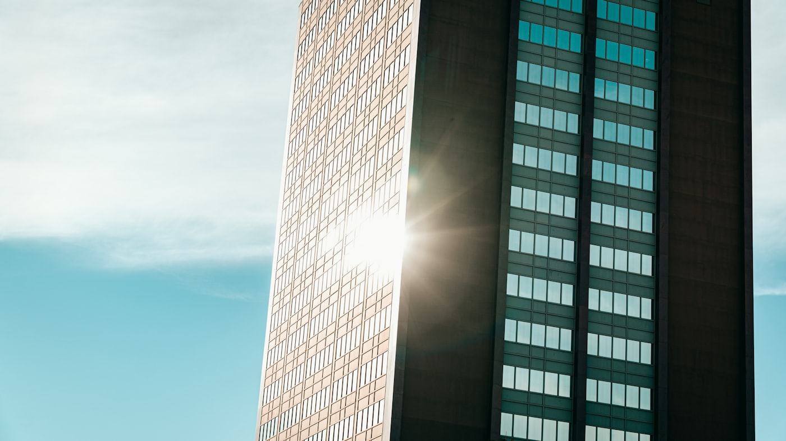
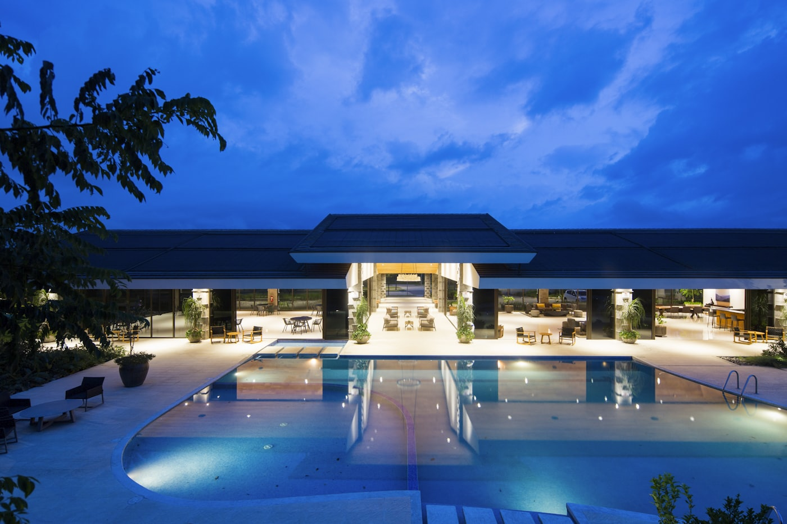
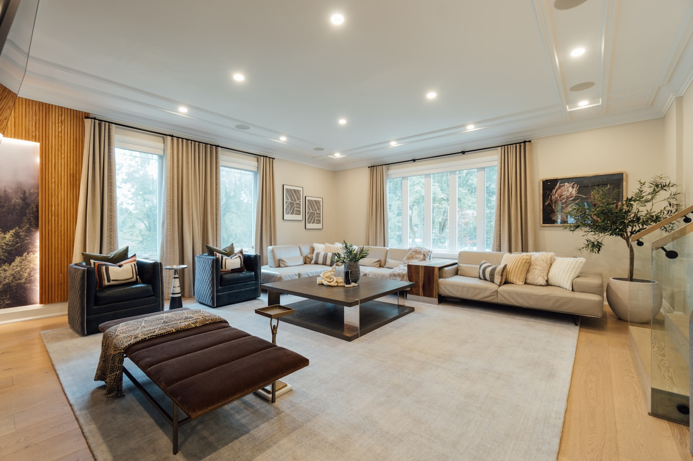
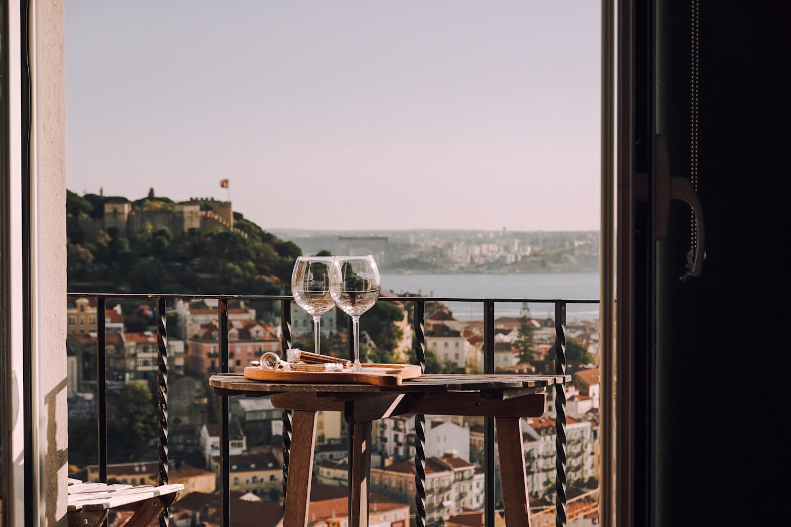
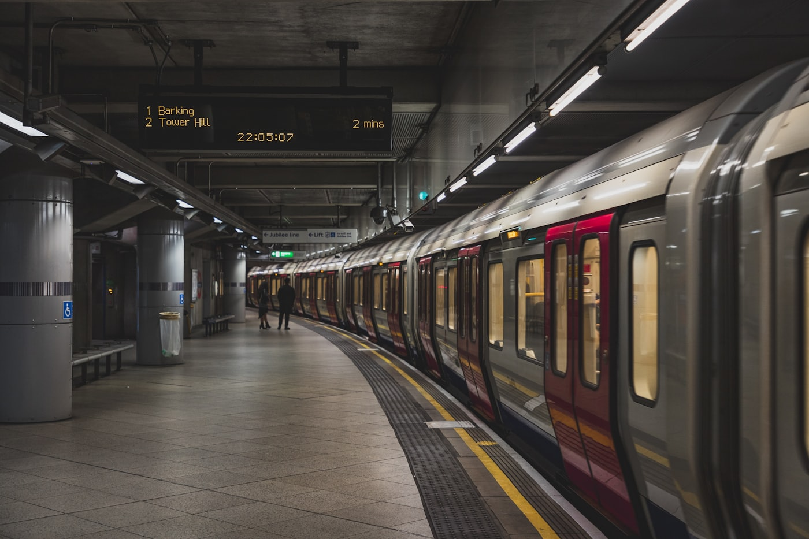

An ultra-luxury, large-format address planned at the single most valuable junction in East Bangalore — walking distance from Hopefarm Channasandra Metro and adjoining the Alembic City precinct that houses Google’s 30-lakh sq ft Bengaluru campus. Only 3.5, 4 and 5 BHK homes. No compact inventory.
Lodha Hope Farm Whitefield is Lodha Group’s upcoming ultra-luxury residential development planned on roughly eight acres at Hope Farm Junction, on Whitefield Main Road in the Kadugodi belt of East Bangalore. It is currently at the pre-launch, expression-of-interest stage, and is being marketed interchangeably as Lodha Hopefarm and Lodha Whitefield — both names refer to the same site.
What makes the project unusual is not the acreage but the restraint applied to it. Six towers and roughly 300-plus homes on eight acres is a deliberately low density for Whitefield, where comparable land parcels routinely carry 700 to 1,200 units. That decision is what creates the defining feature here: every residence is a large-format home, starting at about 2,500 sq ft and running up to about 4,000 sq ft, with only 3.5, 4 and 5 BHK layouts on offer. There is no 1, 2 or 3 BHK inventory planned, and no studio or compact segment to dilute the resident profile.
Verified position as of August 2026: land parcel and configuration mix are consistent across channel sources; acreage, tower count, unit count, floor plans and pricing are all indicative and remain unconfirmed until the Karnataka RERA filing is made. Nothing on this page should be read as an official Lodha disclosure.
Hope Farm Junction is the point where Whitefield Main Road, Kadugodi and the Channasandra corridor converge, and it has changed character sharply in the last three years. Two events drove that. First, the Purple Line metro extension to Whitefield became operational in March 2023, putting Hopefarm Channasandra station within a five-minute walk of this parcel and connecting it directly to KR Puram, Baiyappanahalli, Indiranagar and MG Road without touching Old Airport Road traffic. Second, the adjoining 90-acre Alembic City precinct signed Google as an anchor occupier, with commitments reported in the range of 30 lakh sq ft of office space through 2025–2026, following an initial 6.5 lakh sq ft lease in 2024.
The combination matters for a large-format project specifically. A 2,500 to 4,000 sq ft home at ₹4 crore-plus needs a buyer pool of senior technology leadership, founders and returning NRIs — exactly the demographic that a Google campus and the wider ITPL and EPIP employment base creates within a ten-minute commute. Very few parcels in Bangalore place that buyer’s workplace, metro station and home inside the same three-kilometre radius.

Six towers across approximately eight acres, planned around large floor plates rather than maximum unit count.
Hopefarm Channasandra station on the operational Purple Line is roughly five minutes on foot.
Every home is 2,500 sq ft or larger. No compact inventory, no mixed resident profile.
EOI stage, registration not yet filed. We document exactly what is confirmed and what is not.
Lodha has not published an official price list for Hope Farm Whitefield, and it cannot legally do so before RERA registration. What follows is the indicative structure circulating through authorised channel partners at the EOI stage, benchmarked against Lodha’s existing Bangalore pricing and against ready inventory in the same micro-market.
| Configuration | Super Built-Up (Approx.) | Carpet (Approx.) | Indicative Price* |
|---|---|---|---|
| 3.5 BHK | 2,500 sq ft | 1,780 sq ft | ₹4.00 Cr onwards |
| 4 BHK | 3,000 sq ft | 2,140 sq ft | ₹4.80 Cr onwards |
| 5 BHK | 4,000 sq ft | 2,850 sq ft | ₹6.40 Cr onwards |
*Derived from an indicative pre-launch rate of approximately ₹16,000 per sq ft on super built-up area. Actual figures will vary by tower, floor and view, and are subject to change at formal launch.
Buyers evaluating a ₹4 crore entry ticket should budget an all-in figure roughly 10 to 12 per cent above the headline number. The following are charged separately and are standard for the segment:
On a ₹4 crore purchase with a 20 per cent down payment, a ₹3.2 crore home loan at 9 per cent over 20 years works out to approximately ₹2.9 lakh per month. Most lenders will look for a household income in the ₹7 to 8 lakh per month band to sanction that comfortably, or a materially larger down payment. Because possession is several years out, construction-linked disbursement means the full EMI does not begin immediately — pre-EMI interest applies on drawn tranches, which is worth modelling carefully over a four-year build.
The amenity list for Hope Farm Whitefield has not been officially released. The master plan reserves land for a central clubhouse, landscaped gardens, sports courts and children’s zones, and the expectation set through channel partners is a 50-plus facility programme. The detail below is inferred from Lodha’s delivered Bangalore projects, where clubhouses at this price point run up to 45,000 sq ft, and should be treated as a reasonable expectation rather than a commitment.



The full address in circulation is Hope Farm Junction, Whitefield Main Road, near Maithri Layout, Kadugodi, Bengaluru 560066 — opposite Mahindra Blossom and adjacent to Alembic City. In practical terms, this is the eastern edge of the ITPL employment catchment, but on the metro side of it, which is the distinction that governs daily commute quality.
| Landmark | Distance / Drive Time |
|---|---|
| Hopefarm Channasandra Metro (Purple Line) | ~5 min walk · operational since Mar 2023 |
| Alembic City — Google campus precinct | Adjacent |
| ITPL & EPIP Zone | 5–10 min |
| Brookefield & ECC Road corridor | 10–15 min |
| Phoenix Marketcity / VR Bengaluru | ~15 min |
| Nexus Whitefield & Shantiniketan | 10–20 min |
| Vydehi Hospital (1,600 beds) | 10–15 min |
| Manipal & Aster Whitefield | 5–15 min |
| MG Road / CBD via metro | ~45–55 min rail |
| Kempegowda International Airport | ~45–60 km · 60–90 min |

For a project built entirely around family-sized homes, the school map is a primary decision input rather than a footnote. Within about ten kilometres sit Deens Academy, National Public School Whitefield, Vydehi School of Excellence, Delhi Public School Whitefield, Inventure Academy, The Brigade School and Global Indian International School Whitefield, spanning CBSE, ICSE and IB curricula. Annual fees across this set typically run from ₹1 lakh to ₹5 lakh, and admissions for the IB and top CBSE options in this belt are competitive enough that families usually secure a seat before finalising possession timelines.
Whitefield is one of the better-served healthcare micro-markets in Bangalore. Vydehi Institute of Medical Sciences with roughly 1,600 beds, Manipal Hospital Whitefield, Aster Whitefield, Sakra World Hospital, Motherhood and Cloudnine are all within a five to fifteen minute drive, with Svastha Hospital closest to the junction itself. Retail is equally dense — Phoenix Marketcity with its 300-plus stores and PVR complex, VR Bengaluru, Nexus Shantiniketan, Nexus Whitefield and Park Square Mall inside ITPL all fall inside a twenty-minute radius.
No credible assessment of Whitefield skips this. Whitefield Main Road, Varthur Road and the ITPL approach remain congested at peak hours, and the airport run is long regardless of route. The metro materially changes the calculus for CBD-bound and Indiranagar-bound travel, but it does not solve the last-mile cross-town drive or the airport journey. Buyers whose work or travel pattern is airport-heavy should weigh this against the north Bangalore corridor before committing at this price point.
“Very few parcels in Bangalore place a buyer’s workplace, a working metro station and a 3,000 sq ft home inside the same three-kilometre radius.” Properties Bangalore · Whitefield Advisory Desk
Project-specific specifications will be released with the official brochure. The standard below reflects what Lodha delivers in its comparable Bangalore and Mumbai large-format inventory, and is what a buyer should hold the eventual agreement against.
Whitefield has been among the strongest performing residential micro-markets in Bangalore over the last five years. Average capital values moved from roughly ₹6,000 to ₹7,500 per sq ft in the 2019–20 baseline to approximately ₹13,000 to ₹16,000 today — appreciation in the order of 80 per cent. Ready-to-move premium resale inventory in the Hope Farm and Kadugodi belt now transacts in the ₹17,000 to ₹20,000 per sq ft range, which is the number that matters most when assessing an indicative ₹16,000 per sq ft pre-launch entry: the spread to ready pricing is real but not enormous, so the return case leans on the next cycle of office absorption rather than on an obvious mispricing today.
Gross rental yield on 2,500 sq ft-plus homes in Bangalore typically lands in the 2 to 3 per cent band, against 4 to 6 per cent on compact two-bedroom stock. Large-format inventory is a capital-appreciation and end-use asset, not a cash-flow asset. Buyers modelling this purely as a yield play will be disappointed; buyers who intend to live in it, or who are underwriting a ten-year appreciation horizon backed by the Alembic City and ITPL employment base, are reading it correctly.
As of August 2026, no Karnataka RERA registration number has been issued or filed for Lodha Hope Farm Whitefield. Under the Real Estate (Regulation and Development) Act, 2016, a promoter may not advertise, market, book, sell or offer for sale any unit in a project before obtaining RERA registration. That has direct, practical consequences for anyone considering an expression of interest now.
We publish this section on every pre-launch listing because it is the part buyers are most often not told. A pre-launch entry can be a genuinely good decision — it is simply not the same instrument as buying a registered, under-construction unit, and it should not be priced or documented as if it were.
Lodha Group has operated in Indian real estate since 1980 and has delivered more than 85,000 homes nationally, with a portfolio spanning Mumbai, Pune, Bengaluru and London. Its Bangalore presence has expanded steadily and now includes Lodha Mirabelle in Thanisandra, Lodha Azur on Bannerghatta Road, Lodha Elanza on Sarjapur Road, Lodha Sadahalli on the airport corridor and Lodha Haven on Hosa Road. Hope Farm Whitefield would be the group’s most premium Bangalore address to date, and its first large-format, low-density play in the eastern corridor — which is itself a signal about how the developer reads Whitefield’s next decade.
At Hope Farm Junction on Whitefield Main Road in the Kadugodi belt of East Bangalore, near Maithri Layout, pincode 560066. The parcel sits opposite Mahindra Blossom and adjacent to the Alembic City precinct, roughly a five-minute walk from Hopefarm Channasandra metro station on the Purple Line.
Only large-format homes: 3.5, 4 and 5 BHK. Indicative super built-up areas are about 2,500 sq ft, 3,000 sq ft and 4,000 sq ft respectively. There is no 1, 2 or 3 BHK inventory planned.
Indicative pre-launch pricing is around ₹16,000 per sq ft, placing the entry 3.5 BHK at approximately ₹4 crore. No official price list exists yet because the project is at the EOI stage. Stamp duty and registration, GST, floor rise, PLC, parking, club membership and corpus fund are all charged over and above the base price.
No. As of August 2026 RERA registration has not been filed. Any amount paid at this stage should be structured as a refundable expression of interest, not a booking, and no agreement should be signed until the registration number is verifiable on the Karnataka RERA portal.
No official date has been announced. Working from a likely formal launch in late 2026 or 2027 and a typical four to four-and-a-half-year high-rise build cycle, handover realistically falls in the 2030 to 2031 window. The committed date is fixed only at RERA filing.
Hopefarm Channasandra metro is about a five-minute walk. ITPL and the EPIP zone are 5 to 10 minutes, Brookefield and ECC Road 10 to 15 minutes, Phoenix Marketcity about 15 minutes. Kempegowda International Airport is roughly 45 to 60 kilometres and 60 to 90 minutes depending on route and traffic.
Channel information indicates approximately eight acres, six high-rise towers and roughly 300-plus units. That low unit count relative to land area is what permits 2,500 to 4,000 sq ft floor plates. Tower heights, floor counts and the final unit tally will be confirmed only in the sanctioned plan and RERA filing.
The location fundamentals are strong — roughly 80 per cent five-year appreciation in Whitefield and a large Google campus next door driving senior-level housing demand. The caveats are a long pre-RERA holding period, entry pricing already close to ready-inventory rates, and gross yields of 2 to 3 per cent on large-format homes rather than the 4 to 6 per cent seen on compact units.
Not officially confirmed. Based on master-plan zoning and Lodha’s comparable Bangalore projects, expect a large central clubhouse, temperature-controlled pool with children’s pool, gymnasium and fitness deck, yoga and meditation lawns, tennis, badminton and basketball courts, amphitheatre, jogging and cycling tracks, co-working lounge, pet park, children’s play zones, multi-tier security with CCTV and biometric access, basement EV charging and rainwater harvesting.
Lodha Group, in Indian real estate since 1980 with more than 85,000 homes delivered. Bangalore projects include Lodha Mirabelle (Thanisandra), Lodha Azur (Bannerghatta Road), Lodha Elanza (Sarjapur Road), Lodha Sadahalli (airport corridor) and Lodha Haven (Hosa Road).
We are an authorised advisory partner. You get the indicative price band, the EOI terms in writing, the master-plan position of each tower as it stands, and a site walk at Hope Farm Junction — with the pre-RERA caveats stated plainly, not buried.
+91 80 4588 8783
Mon–Sat · 9 AM – 7 PM